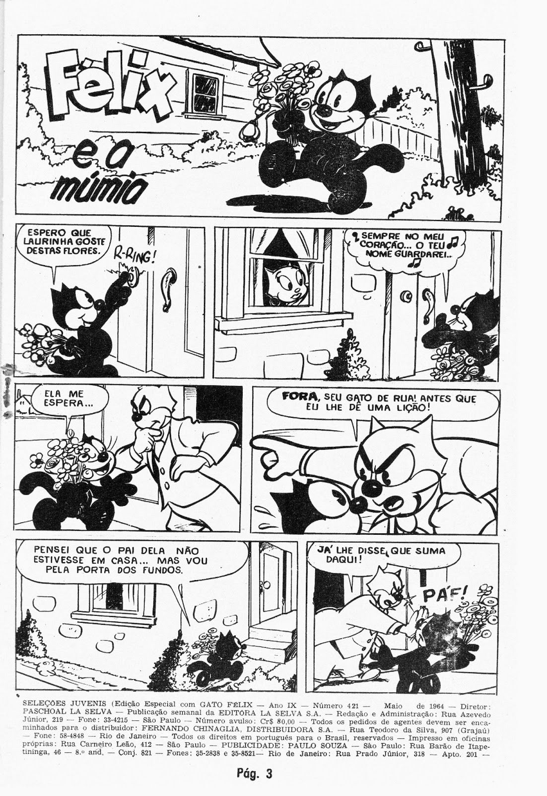

Exposição comemora os 90 anos do gato felix
Você se lembra do Gato Felix? O famoso gato dos desenhos animados comemora 90 anos e ganha uma exposição em sua homenagem. Até o dia 4 de outubro, a Fnac Pinheiros, em São Paulo, apresenta uma retrospectiva do personagem, com 30 peças originais - entre elas, as primeiras histórias em quadrinhos, pinturas em tela, antiguidades de merchandising e desenhos animados. Quem sabe não é uma boa oportunidade de apresentar Felix para seus filhos?
Com sua inseparável maleta, Gato Felix foi reconhecido como “primeiro ator norte-americano”, já que a imagem dele foi a primeira a ser exibida por um aparelho de TV doméstico em 1928. No Brasil, a primeira aparição de Felix foi em 1929 nas páginas da Gazeta Infantil ou Gazetinha, um suplemento do jornal Gazeta. Monteiro Lobato também criou uma história chamada O Gato Felix, em que um impostor vai ao Sítio do Picapau Amarelo e se passa pelo personagem. Mais tarde, a história se transformou em um capítulo de Reinações de Narizinho.
Além da exposição, a comemoração dos 90 anos do personagem prevê uma nova série de TV para o segundo semestre de 2010, que está sendo produzida em tecnologia 3D.
Quem é o Gato Felix
Felix foi o primeiro personagem importante de desenhos animados do mundo. Ele estreou em 1919, ainda antes de Mickey Mouse, na época do cinema mudo, e também foi o primeiro gato a estrelar um desenho animado.
O criador do Gato Felix foi Otto Messmer, um animador de New Jersey que trabalhava para o estúdio de animação de Pat Sullivan em Nova York. Durante décadas, Messmer criou e desenhou animações, histórias em quadrinhos e ilustrações de Félix. No entanto, apesar do estúdio de Sullivan assinar todas as obras, a autoria do personagem é reconhecida também como de Joe Oriolo, discípulo de Messmer que acabou assumindo o personagem e perpetuando sua fama até os dias de hoje.
Gato Félix – história do primeiro personagem animado da televisão
Existem diversos personagens de desenhos animados na televisão, mas você conhece o primeiro que surgiu? Pois bem, o Gato Félix é o pioneiro no cinema de animação. Além disso, é conhecido por ser a primeira imagem transmitida na televisão em todo o mundo.
Nesse sentido, é uma importante figura para todos os outros personagem que vieram depois. Como exemplo pode-se citar o Mickey Mouse da Disney e os demais gatos de desenho animado da televisão.
Basicamente, o Gato Félix foi criado em 1917 pelo desenhista Otto Messmer, nos Estados Unidos. Sendo assim, é um personagem que surgiu paralelamente ao desenvolvimento do cinema mudo e das grandes invenções dessa indústria.
